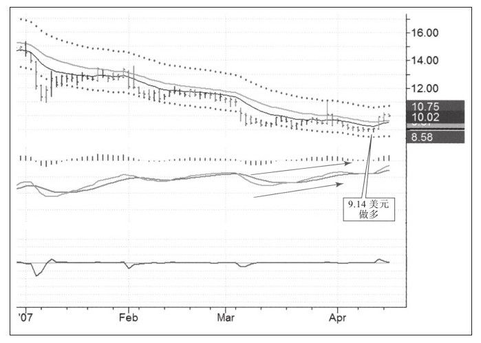
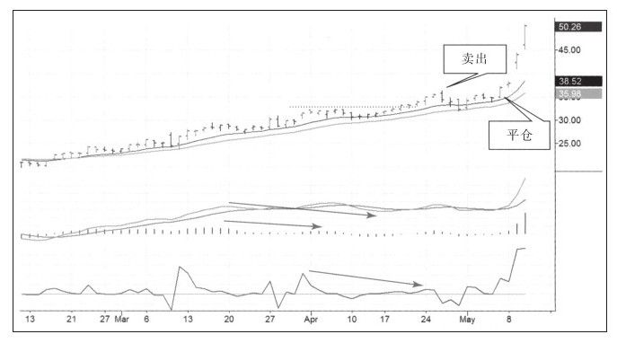

如果祸不单行，那么好事会怎么来临呢？或许只是独自来临。我们知道多数人都会亏钱，只有少数人能稳定盈利，成功的交易往往与大众交易的方向相反，所以在做空股票时你该知道你做空了公司多少股票。
很少有人做空股票，所以做空股票的数量往往只占公司总股本的很小比例。如果你想考察一只股票做空者的参与程度，有两个指标可供参考：空头持仓比率和平空所需天数。
空头持仓比率是被做空的股票占可供做空的股票的比例，交易者可以用发行在外的股票减去下列三类股票后得出可供做空的股票总数，这三类股票包括：高管持有的非流通股、持有公司总股本5%的战略投资者以及内幕交易者持有的股票。如果从总股本中把那些不太可能在市场中卖出的股票减去，你就会得出有多少股票可供做空，这就得出了可供做空的股票数。
经纪商会向交易所报告每只股票的空头未平仓数量，交易所将每只股票的空头未平仓数据加总后公之于众。交易者可以将每只股票的未平仓股数除以可供做空的股票数得出空头持仓比率。这个数据可以反映特定股票的做空强烈程度。
当空头持仓比率上升时，表明做空规模在增加。交易者要明白每只股票的空头头寸最终都要平仓，所以当空头开始恐惧并平仓时，速度会非常快。空头平仓造成的上涨因速度太快而声名狼藉，如果空头持仓比率增加，就表明股票未来可能有一次剧烈的向上运动。
空头持仓比率没有对安全和危险水平进行清晰的定义，每只股票中该数据的意义都不同，尤其是含有期权的股票，因为投机商可能做空股票的同时也买入看涨期权以获得交易价差的收益，而非看空股价走势。一般而言，空头持仓比率少于10%通常是可以忍受的，但当该比例达到20%的时候，这个做空规模就大得让人怀疑。
另一个衡量看跌强度的工具是平空所需时间指标，将总的空头头寸除以日平均成交量就可以得出该指标数据。这个指标的意义是空头需要多少天才能平掉头寸。
如果在人群拥挤的电影院中有人喊“着火啦”，无论是否真的着火，人们都会夺路逃跑。无论涨跌，价格小小的变动都会触动市场神经。做空者在股票下跌时可能变得懒惰而自满，但他们却在强烈平空上涨的行情中有更强的出场愿望，加剧上涨的痛苦使其自食恶果。
在电影院中四散逃跑时，踩踏事件不可避免，如果平空所需时间少于一天，就表明“窄门”前人不多，“踩踏事件”也不太可能发生。但如果平空所需时间多于20天（有时甚至多于50天），表明股票对空头来说已经相当不安全，需要很长时间才能平仓出局，肯定有人因“踩踏事件而死”，因为此时很多人要通过那扇“窄门”。
但要注意那扇门可能很快就会变宽，让做空者更易出局并减少平空所需时间。例如，现在有1 000万股未平仓股票，日均成交额是100万股，平仓所需时间就是10天。如果日均成交额上升到200万股，平仓所需时间就降低到5天。一般而言，当平仓所需时间低于10天时，“踩踏”发生的概率就很低；但如果该数据高于20天，就一定是个警示了。
对大多数股票来说，有多种方法可以获得空头持仓比率和平空所需时间。例如，交易者可以通过雅虎财经网站，键入关键字然后点击“获得图表”，点击页面下部的“关键数据统计”，这里面就有“未平仓空头头寸”和“做空比例”。先前提到的克里·劳文说过：
我不以空头持仓数据作为交易依据，我按照我通常使用的方法展开交易，但会把空头持仓作为进出的辅助工具。如果有两只很有吸引力的股票，我更可能买入高空头持仓比率的股票，我知道那些做空的人将来会买回他们的股票，他们是“天然的”买入者。但我不会仅因为股票是高空头持仓比例而买入它（见图7-29）。

当寻找潜在做空机会时我也会关注空头持仓，此时我主要使用空头持仓比例作为过滤器，来帮助我过滤掉那些空头持仓比例过高的股票。我不想和大众去挤那扇“窄门”。请记住，你和我是同时做空HANS股票的（见图7-30）。

祸不单行，但好事难成双。空头持仓比例和平空所需时间会帮你发现那些空头持仓不多的股票。